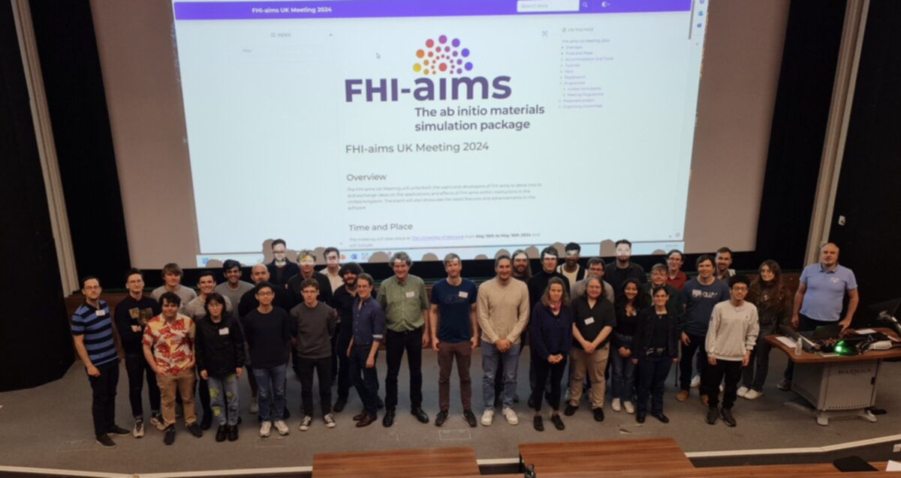

FHI-aims UK Meeting 2024¶
Overview¶
The FHI-aims UK Meeting will unite both the users and developers of FHI-aims to delve into to and exchange ideas on the applications and effects of FHI-aims within institutions in the United Kingdom. The event will also showcase the latest features and advancements in the software.
{kind=link}
Time and Place¶
The meeting will take place at The University of Warwick from May 15th to May 16th 2024 and will include:
Tutorials: 09:00 - 12:00 May 15th
Presentations and Posters: 12:00 May 15th - 13:00 May 16th
Hack: 14:00 - 18:00 May 16th
The venue for the meeting is the Science Concourse within the Physics Department of the University of Warwick. Directions can be found on this interactive campus map.
Directions to the conference rooms, campus accomodation and dinner location can be found on this map.
{kind=link}
Accommodation and Travel¶
Accommodation options include a limited number of rooms available to be booked on the university campus for attendees through Warwick Conferences. Alternatively, accommodation is generally available within Coventry city (a short bus ride from the campus).
Travel to the University of Warwick is achieved easily through rail connections to Coventry station and then a bus journey from outside the station to the campus. More information about how to get to the university can be found on the university website.
Tutorials¶
Tutorials will run in a linear fashion form 09:00 to 12:00 on May 15th, with a coffee break at 10:00. The tutorials will cover, in order; an introduction to FHI-aims, hybrid DFT (including a discussion on performance optimisation), RPA and GW. Simultaneously, there will also be expert offshoots to discuss particular methods or topics.
The sessions will be hands-on and require a precompiled FHI-aims binary and license. Instructions for obtaining the software can be found on the FHI-aims webpage, and any license requirements should be completed prior to arrival. Support will also be available onsite from MS1P.
Hack¶
Following the presentation schedule of the meeting, all attendees are invited to a code hack, wherein the developers of the codebase will get together and take part in some collaborative coding. The organisers would like to invite anyone with a suggestion for features to be included in FHI-aims to discuss these at the meeting with the developers. Ideas for topics to address can be logged on a GitLab issue here.
Registration¶
Registration is now closed.
Programme¶
Invited Participants¶
Dr Dorothea Golze, Technische Universität Dresden
Dr Yair Litman, University of Cambridge
Dr Christian Carbogno, Fritz Haber Insitute
Prof. Dr Volker Blum, Duke University
Dr Sebastian Kokott, Fritz Haber Institute
Prakriti Kayastha, Northumbria University
Meeting Programme¶
Time |
Room / Chair |
15/05/2024 |
|---|---|---|
08:30 |
Outside PLT |
Registration/Information |
09:00 |
PLT |
Tutorials - Hybrid DFT with FHI-aims |
10:00 |
Outside PLT |
Coffee Break |
10:30 |
PLT |
Tutorials - GW and BSE |
12:00 |
Outside PLT |
Lunch/Registration/Information |
13:00 |
L4 / Svenja Janke |
Volker Blum |
Overview of FHI-aims |
||
13:20 |
Dorothea Golze |
|
Low-scaling RPA and GW developments in FHI-aims |
||
14:00 |
Break |
|
14:30 |
L4 / Connor Box |
Dylan Morgan |
Using Orbital-Constrained DFT to Simulate Surface Spectroscopy with Relativistic Corrections |
||
14:50 |
Wenxuan Cai |
|
Modeling core-electron binding energy on Metal Oxide |
||
15:10 |
Amit Chaudhari |
|
Machine learning the DFT+U projectors to model polarons in energy materials |
||
15:30 |
Outside L4 |
Refreshments |
16:00 |
L4 / Pavel Stishenko |
Prakriti Kayastha |
Phase transitions in perovskites using machine learning potentials |
||
16:20 |
Akash Hiregange |
|
Computational Insights into the Stability and Phase Transition of Cobalt Oxide Nanoparticles for Fischer-Tropsch Catalysis |
||
16:40 |
Juliana Morbec |
|
Adsorption of azulene and naphthalene on coinage metal surfaces: insights from first-principles calculations |
||
17:00 |
Science Concourse |
Poster Session |
18:30 |
Close |
|
19:00 |
Conference Centre |
Dinner |
Time |
Room / Chair |
16/05/2024 |
|---|---|---|
08:50 |
Arrival |
|
09:00 |
L3 / Prakriti Kayastha |
Christian Carbogno |
Charge Transport in FHI-aims: Opportunities and Challenges |
||
09:40 |
Svenja Janke |
|
Hybrid Organic-Inorganic Perovskites |
||
10:00 |
Outside L3 |
Refreshments |
10:30 |
L3 / Oscar van Vuren |
Gabriel Bramley |
Implementation of QM-in-QM Embedding for FHI-aim |
||
10:50 |
Alan Lewis |
|
Symmetry-Adapted Learning of Three-Dimensional Electron Densities (SALTED) |
||
11:10 |
Erin Johnson |
|
Implementation, benchmarking, and applications of the XDM dispersion model in FHI-aims |
||
11:30 |
Break |
|
12:00 |
L3 / James Green |
Pavel Stishenko |
Using multipolar expansion model of implicit solvent for periodic systems and clusters |
||
12:20 |
Yair Litman |
|
Surface-specific spectroscopy from first principles |
||
13:00 |
Outside PLT |
Lunch |
14:00 |
PLT |
Hack (all welcome!) |
18:00 |
Close |
Presented posters¶
Zhongwei Lu, “Towards CO2 activation on Co modified Cu surfaces”
Oscar van Vuren, “Developing Standardised Modelling Workflows for QM/MM Simulations of Metal Oxides”
Matt Robinson, “Tuning Zeolite Catalysts using Organic Additives”
Kushagra Agrawal, “Optimizing Guerbet Reaction Chemistry Using Data-driven Approach.”
Alexander Spears, “Molecular dynamics investigation of the role of lattice heating in laser-driven hydrogen evolution at copper surfaces”
Nils Hertl, “Assessing different levels of electronic friction theory for H atom scattering and vibration dynamics at metals surfaces”
Wojciech Stark, “Nonadiabatic effects in hydrogen scattering dynamics at Cu surfaces”
Eimear McCarthy, “Exploring surface reconstruction of polar zinc oxide surfaces”
Lukas Hoermann, “Optimization of incommensurate organic/inorganic interface structures to study superlubricity”
Organising Committee¶
Prof. Reinhard Maurer (University of Warwick)
Dr Andrew Logsdail (Cardiff University)
Dr Connor Box (University of Warwick)
Dr Svenja Janke (University of Warwick)
Dr Pavel Stishenko (Cardiff University)
Oscar van Vuren (Cardiff University)
The organisers would be happy to answer any queries via email.